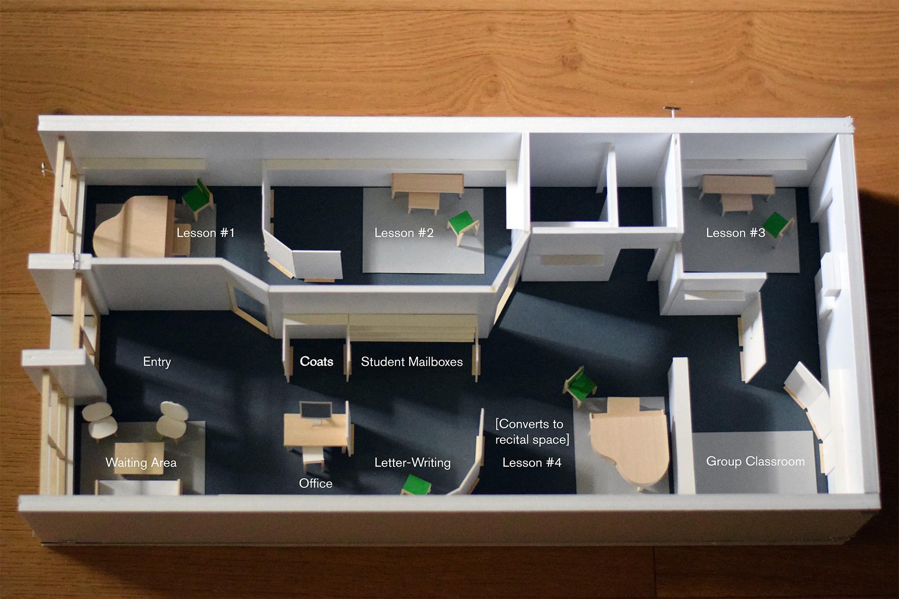
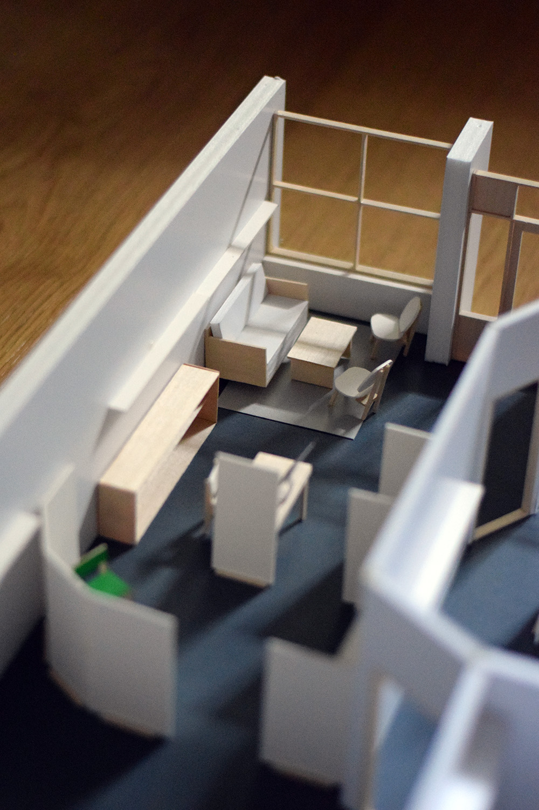
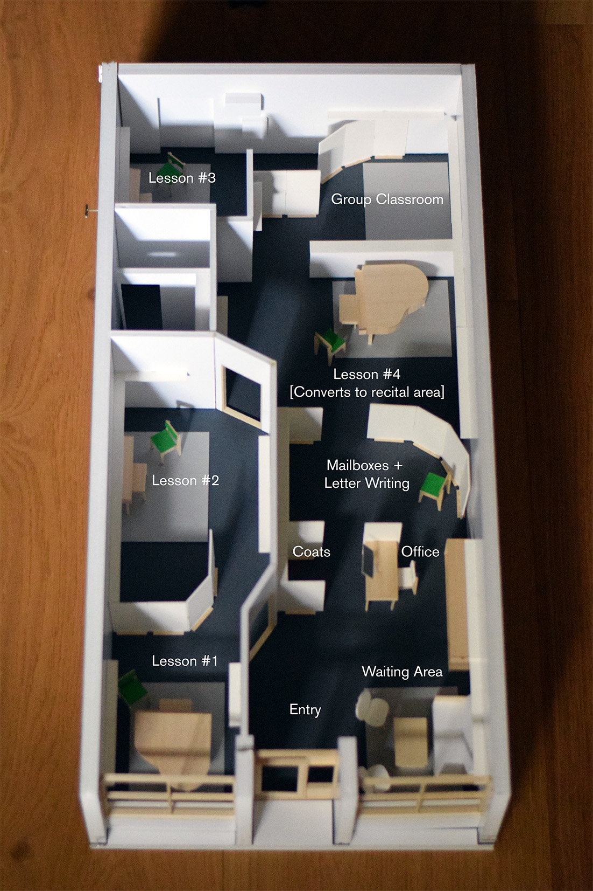

Cadence Music Academy
2026 (in progress), North Attleborough, MA
This project is the renovation of a 1,000 square foot storefront space for an all-ages music school, with a focus on piano. With a modest budget, the goal was to modify the existing space to maximize lesson rooms and minimize acoustic transfer without building new walls. The design proposal uses movable acoustical panels to create an enfilade effect to both organize and soften the space, while allowing flexibility for conversion to a recital area. Visibility to one of the grand piano lesson rooms is offered through the storefront window. Student mailboxes and a letter-writing station make use of a leftover narrow space to celebrate the delight and incremental progress of music education.

